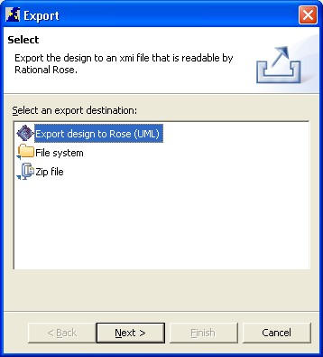

This tutorial will help you to understand project
related functionalities of the ArchE perspective.
To create a new ArchE project :
- Select File | New | ArchE Project from the main menu
- or go to the Navigator view, right click (on the mouse) and
select New | ArchE Project.
The dialog box to create a New ArchE Project will pop up.
Give the project a name. You have the choice of creating a blank
project (no scenarios, functions, responsibilities, etc.) or a project
pre-populated with sample data.
If you select sample data, you have to specify a data file from which a
prepopulated fact base is loaded into the fact base of the Core. Sample
files are provided as options. In the case of creating a project with
sample data, please ensure integrity of the data file.
The new project created should have a design folder (where the exported
design files are stored by default) and a FactBase.dat file (this file
will contain the persistent facts for a project).
You can close an ArchE project by right clicking on the project and
selecting Close Project from the context menu. The contents of the
views will be refreshed. Instead of the data of the project that was
closed, they will display a warning asking the user to open or create a
project.
You can open a (closed) ArchE project by right clicking on the project
and selecting Open Project from the context menu. The views will
refresh automatically to display the facts for that project.
If there is more than one ArchE project in the
Navigator view, the user can switch between these projects. However,
only one project should remain open at any given time.
You can delete an ArchE project by right clicking on the project and
selecting Delete from the context menu. The contents of the views will
be refreshed. Instead of the data of the
project that was closed, they will display a warning asking the user to
open or create a project.
You can export an ArchE design to Rational Rose by clicking export
in the file menu, selecting an export designation as Export Design
To Rose(UML) and clicking Next. And then you need to choose target file
and click Finish and the design will be exported to the chosen file.

Before opening the exported XMI file to Rational Rose, you need to install
an add-in file (
add-in file For Rational Rose) first.
After installation, you can import ArchE design file by clicking menu
'tools | UML 1.3 XMI Addin | UML 1.3 XMI Import'
This tutorial briefly introduced you to all functionalities related to
ArchE projects.